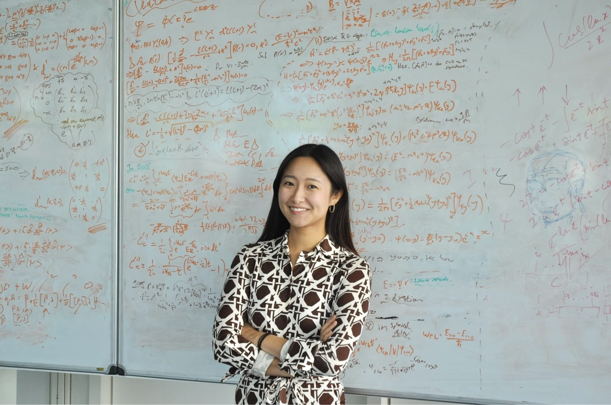

Lawrence Berkeley National Laboratory
Neutrino Physicist · Detector Instrumentation · Science Communication
ABOUT

I am a neutrino physicist at Lawrence Berkeley National Laboratory and a Visiting Associate Professor at the ZERO Institute, Tohoku University.
My research focuses on the development of next-generation detector technologies for neutrino experiments, with an emphasis on liquid argon time projection chambers, cryogenic instrumentation, and detector commissioning.
Beyond research, I enjoy communicating science through public talks, media appearances, and educational outreach, with the goal of making frontier physics accessible to broader audiences.
RESEARCH
Cryogenic electronics, detector commissioning, and large-scale neutrino detectors.
Solar neutrinos, supernova neutrinos, and liquid argon TPCs.
Explore →Ensuring detector performance through commissioning, validation, and quality assurance.
Public lectures, outreach, media collaborations, and international education.
FEATURED PROJECTS
Developing detector technologies for the world's leading long-baseline neutrino experiment.
Next-generation pixel readout systems for liquid argon detectors.
Detector validation, electronics testing, and commissioning strategies.
TALKS & MEDIA
Public lectures, interviews, documentaries, and featured talks will appear here.
PUBLICATIONS
CONTACT